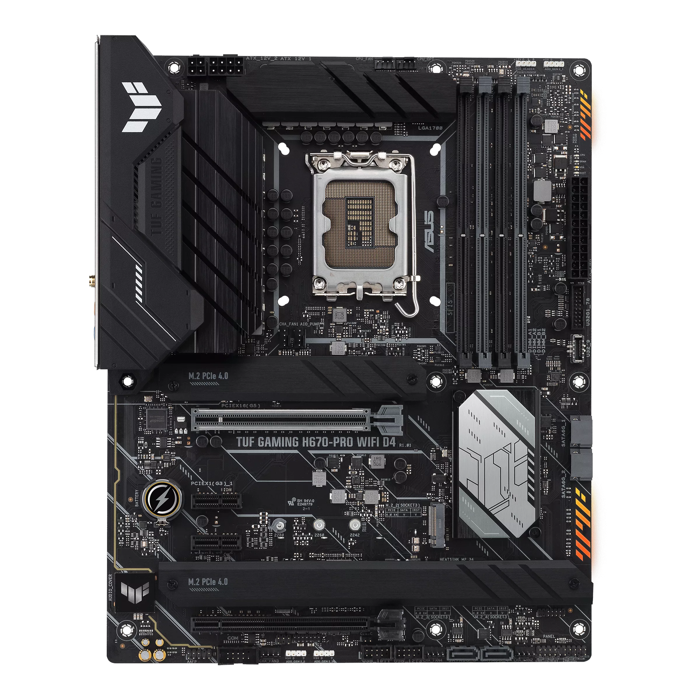
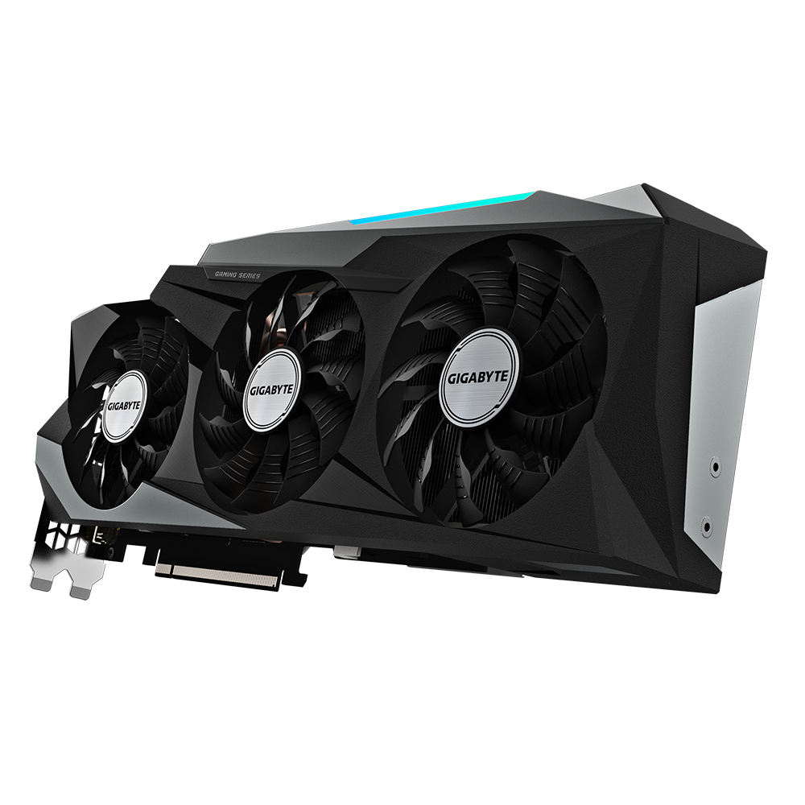
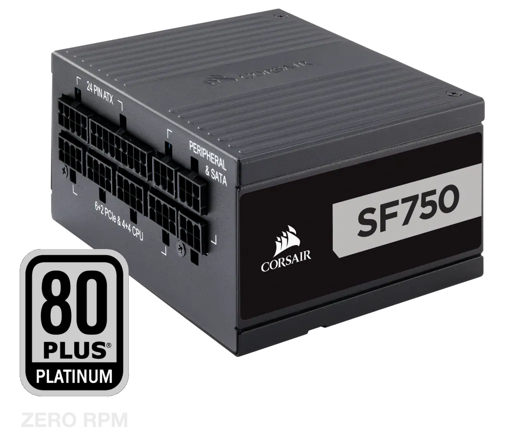
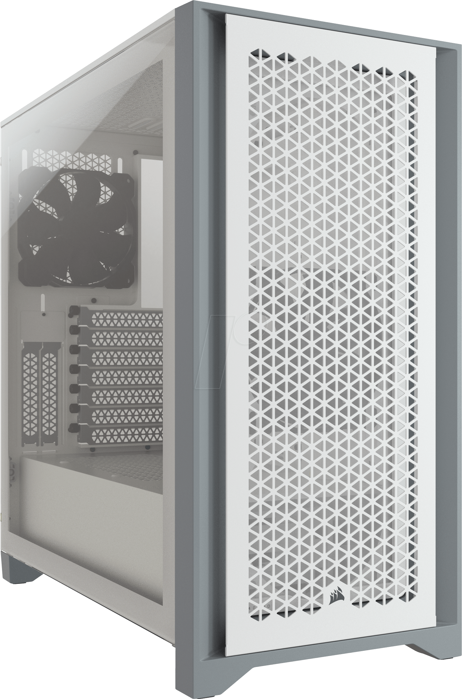

Kako izabrati komponente i sastaviti kompjuter?
Sadržaj
Uvod
Dobio sam svoj prvi kompjuter sa 7 godina, uvijek mi je bilo zanimljivo da vidim kako to sve radi. Taj kompjuter sam rastavio i sastavio mnogo puta, sad sam iznenađen kako je zapravo lagano sastaviti kompjuter kupovinom osnovnih komponenti. Možda dijete u mene priča ali sastavljanje kompjutera je baš zabavno, kao skupe lego kockice. U ovom blogu ću objasniti neke osnove i mislim da svako ko pročita ovaj blog će moći sebi izabrati djelove i sastaviti kompjuter.
Procesor
 Procesor je najvažniji dio kompjutera, a ujedno i najmanji. On vrši sve kalkulacije i uglavnom je centralni dio računara.
Bitne specifikacije koje trebate znati za procesore je brzina procesora i broj jezgri. Brzina procesora se mjeri u GHZ, broj operacija u sekundi (1 GHZ je 1 milijarda operacija u sekundi). Broj jezgri je u principu koliko operacija procesor može da radi u paralelno (poželjno je 4).
Da bi izabrali processor trenutno imamo dva izbora AMD ili Intel. Svake godine te kompanije izbacuju nove verzije processora, gdje su uglavnom malo bolji od onih iz prethodne godine. Nove verzije processora zovemo generacije. Trenutno je Intel u 13toj generaciji a AMD u 7oj. Ako gledate najnovije trenutno je Intel jeftiniji i bolji, od 10te do 13te generacije je bolji AMD a prije 10te generacije je bolji Intel. Verzije procesora su dosta slične (i-intel a Ryzen je AMD).
Procesor je najvažniji dio kompjutera, a ujedno i najmanji. On vrši sve kalkulacije i uglavnom je centralni dio računara.
Bitne specifikacije koje trebate znati za procesore je brzina procesora i broj jezgri. Brzina procesora se mjeri u GHZ, broj operacija u sekundi (1 GHZ je 1 milijarda operacija u sekundi). Broj jezgri je u principu koliko operacija procesor može da radi u paralelno (poželjno je 4).
Da bi izabrali processor trenutno imamo dva izbora AMD ili Intel. Svake godine te kompanije izbacuju nove verzije processora, gdje su uglavnom malo bolji od onih iz prethodne godine. Nove verzije processora zovemo generacije. Trenutno je Intel u 13toj generaciji a AMD u 7oj. Ako gledate najnovije trenutno je Intel jeftiniji i bolji, od 10te do 13te generacije je bolji AMD a prije 10te generacije je bolji Intel. Verzije procesora su dosta slične (i-intel a Ryzen je AMD).
| Verzija | Karakteristike |
| i3, Ryzen 3 | Najslabija i najjeftinija verzija |
| i5, Ryzen 5 | Najčešće kupljena, daje dobar balans između cjene i performansi |
| i7, Ryzen 7 | Nekada je bila najbolja, sada je često preskaču radi i9-ke, najmanje isplativa ali bolja od i5 |
| i9, Ryzen 9 | Najbolje što imaju u ponudi |
AMD uz ovo još u ponudi ima ThreadRipper. ThreadRipper je procesor sa mnogo jezgri (32 ili čak 64) i on se koristi za servere ili za neke aplikacije koje zahtjevaju mnogo jezgri. Uz procesor često dođe i hladnjak za processor, svaki se malo drugačije instalira, ali najlakše je samo pogledati upustva.
RAM
 RAM je radna memorija računara.
Ovo nije memorija na kojo se nalaze slike, ona je kao radni stol, memorija gdje stoje stvari dok se obrađuju a ladice bi predstavljale stvarnu memoriju. Razlika između RAM-a i obične memorije je što je RAM veoma brz, ali nakon resetovanja sve se briše sa RAM-a. RAM generacije rjeđe izlaze (svakih 5 godina). Kada biramo RAM opet se gleda brzina, generacija i kapacitet.Moguće je uzeti više RAM stikova. Dobro bi bilo uzet bar 2 jer tada se koristi dual channel i sve radi brže. Generacije se označavaju sa DDR i imamo: DDR1, DDR2, DDR3, DDR4,DDR5
RAM je radna memorija računara.
Ovo nije memorija na kojo se nalaze slike, ona je kao radni stol, memorija gdje stoje stvari dok se obrađuju a ladice bi predstavljale stvarnu memoriju. Razlika između RAM-a i obične memorije je što je RAM veoma brz, ali nakon resetovanja sve se briše sa RAM-a. RAM generacije rjeđe izlaze (svakih 5 godina). Kada biramo RAM opet se gleda brzina, generacija i kapacitet.Moguće je uzeti više RAM stikova. Dobro bi bilo uzet bar 2 jer tada se koristi dual channel i sve radi brže. Generacije se označavaju sa DDR i imamo: DDR1, DDR2, DDR3, DDR4,DDR5
DDR4 je trenutno najisplativiji. Minimalan kapacitet je 8GB ali ja bi preporučio 16GB, brzina je manje bitna.
Matična ploča
Matična ploča je mjesto gdje sve komponente računara leže. Pomoću nje se vrši komunikacija svih komponenti.
Važno je prvo izabrati processor i onda provjeriti socket Processora i tražiti matične ploče sa tim socketom. Socket je ležište u koje procesor ide i lahko je za svaki procesor provjeriti koje ležište ima. Noviji intel-ovi su svi LGA1700 dok su AMD-ovi AM4 ili AM5.
Postaviti procesor u matičnu je poprilično lagano samo provjerite orjenataciju u upustvima i polako ga spustite u mjesto.Slično se stavlja i RAM.


Matične dolaze u raznim veličima u zavisnosti od kakav kompjuter pravite. Od veličina imamo:
| Naziv | Veličina | Namjena |
|---|---|---|
| ATX | 305mm x 244mm | Kompjutere gdje je potrebno mnogo konektora |
| mATX | 244 × 244 mm | Standardne kompjutere |
| ITX | 170 mm × 170 mm | Minimalistički kompjuteri |
Ostalo je sve poprilično intuitivno samo pogledajte upustva!
Memorija
HDD
SSD
NVME SSD
Memorija kompjutera može biti u više tipova imamo HDD i SSD. HDD ima ogroman kapacitet, malu cijenu ali i male brzine. Nalazi se van matične ploče povezan sa SATA kablom. SSD se dalje djeli u dva tipa imamo:
- Standardni SSD
- koji su skuplji i brži i nalaze se van matične ploče.
- N.V.M.E. SSD
- koji su iste cijene kao SSD ali su brži i nalaze se na matičnoj ploči.
Najefikasnije je staviti operativni sistem i par bitnih stvari na N.V.M.E. i ostalo na HDD
Grafička
Procesori često imaju svoju integrisanu grafičku koja može da prikaže sliku na monitoru. Ona je inače poprilično slaba ali je dovoljno jaka za neke osnovne potrebe. Grafička kartica radi to ali mnogo bolje. Razlika između grafičke i procesora je u tome što grafička ima mnogo jezgri, nekad i 2000, ali su dosta slabije od onih na procesoru.

Grafičke su potrebne ako planirate igrati igrice, koristiti neke optimizacije u programiranju, ili se baviti grafičkim dizajnom. Trenutno grafičke kartice proizvode tri kompanije NVIDIA, AMD i Intel. NVIDIA je najbolja i ima donekle monopol nad grafičkim, AMD je usko uz nju ali je slabiji, a Intel je tek ove godine počeo praviti grafičke. Trenutno su Intelove grafičke baš loše ali treba ih podržati da se smanji monopol. Sve u svemu za sada je najbolja NVIDIA.
Napojna jedinica
Napojna jedinica je uređaj koji daje struju kompjuteru. Snaga se mjeri u Watima a efikasnost ima svoje certifikacije:
- 80 Plus
- 80% efikasnost
- 80 Plus Bronze
- 85% efikasnost
- 80 Plus Silver
- 88% efikasnost
- 80 Plus Gold
- 90% efikasnost
- 80 Plus Platinum
- 92% efikasnost
- 80 Plus Titanium
- 94% efikasnost
Kada birate napojnu samo izmati onu koja ima bilo kakvu certifikaciju. Vrlo je lagano malo potrošiti na napojnu ali je moguće spržiti sve ako se uzme nešto nekvalitetno. Napojnu treba koristiti isključivo sa kablovima koji dođu uz nju i nikakav drugi. Da bi izabrali tačnu jačinu napojne pogledajte koliko wati vuče procesor i grafička i dodajte oko 100W preko toga.
Kučište
Kučište je najnebitniji dio računara. To je samo mjesto gdje smještate matičnu ploču i može biti obična kartonska kutija. Kada birate kučište samo provjerite koje veličine je matična ploča i izaberite odgovarajući.